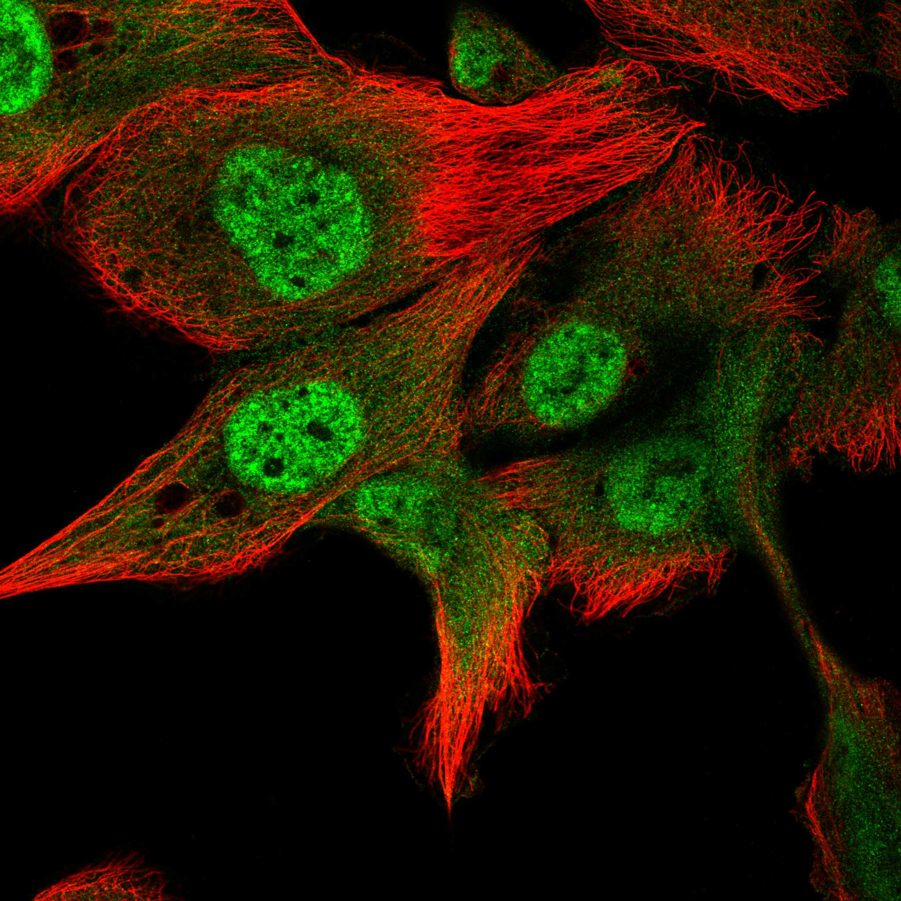
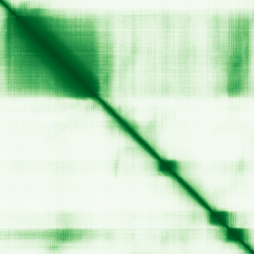
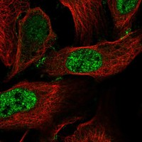
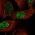

type: protein-evaluation gene: "CCDC85C" date: 2026-06-01 tags: [protein-scout, nuclear-speckle, evaluation] status: scored ---
CCDC85C 核蛋白评估报告
1. 基本信息
| 项目 | 内容 |
|---|---|
| 基因名 / 别名 | CCDC85C / Coiled-coil domain-containing protein 85C |
| 蛋白大小 | 419 aa / 45.2 kDa |
| UniProt ID | A6NKD9 |
| 评估日期 | 2026-06-01 |
2. 评分总览 (新权重)
| 维度 | 得分 | 新权重 | 加权后 | 关键证据摘要 |
|---|---|---|---|---|
| 核定位特异性 | 6/10 | ×4 | 24.0 | GO nuclear speck IDA:HPA (实验验证); UniProt主要定位为tight junction + adherens junction |
| 蛋白大小 | 6/10 | ×1 | 6.0 | 419 aa / 45.2 kDa, 落在实验优势区间 |
| 研究新颖性 | 10/10 | ×5 | 50.0 | PubMed strict=13, broad=16 |
| 三维结构 | 5/10 | ×3 | 15.0 | pLDDT 68.1; 31.3% >90; 无PDB实验结构 |
| 调控结构域 | 4/10 | ×2 | 8.0 | Coiled-coil domain (IPR019359); cell junction + nuclear speckle双定位 |
| PPI 网络 | 7/10 | ×3 | 21.0 | STRING 15 partners (YAP1, PPP1CB/CC/CA); IntAct 16 entries |
| 加权总分 | 124/180** | |||
| 互证加分 | +1.0 | GO nuclear speck IDA:HPA实验证据 + 脑积水疾病关联 | ||
| 归一化总分 (÷1.83) | 67.8/100** |
3. 详细分析
3.1 核定位证据
| 来源 | 定位 | 证据等级 |
|---|---|---|
| UniProt | Cell junction, tight junction (ECO:0000250); Adherens junction (ECO:0000269) | Sequence similarity / Experimental |
| GO-CC | Nuclear speck (IDA:HPA); Adherens junction (IDA:UniProtKB); Cell junction (IDA:HPA); Apical junction complex (ISS); Tight junction (IEA) | 多级证据 |
| HPA | Nuclear speckles, Cell Junctions | Reliability: Approved |
HPA IF 图像: 
结论: CCDC85C是本次评估中定位最为独特的蛋白——同时定位于细胞连接（tight junction + adherens junction）和核斑（nuclear speckles）。GO nuclear speck IDA:HPA为实验验证级别的核定位证据，HPA Approved级IF也支持Nuclear speckles定位。该双定位模式（细胞膜连接 + 核内斑点）极为罕见，提示CCDC85C可能在细胞黏附与核内剪接调控之间扮演桥梁角色。评分: 6/10。
3.2 蛋白大小评估
419 aa / 45.2 kDa，位于300–800 aa实验优势区间内。Coiled-coil domain支持其二聚化或多聚化，在分子量和复合物形成方面适合生化研究。评分: 6/10。
3.3 研究现状
| 指标 | 数值 |
|---|---|
| PubMed strict | 13 |
| PubMed broad | 16 |
| 主要研究方向 | 脑积水（Hydrocephalus）、大脑皮层发育、结直肠肿瘤、Cadmium诱导的centrosome扩增 |
关键文献: 1. Hasan MM et al. (2023). "Disrupted neurogenesis, gliogenesis, and ependymogenesis in the Ccdc85c knockout rat for hydrocephalus model." *Cells Dev*. PMID: 37271245 2. Hasan MM et al. (2022). "Expression of CCDC85C, a causative protein for hydrocephalus, and intermediate filament proteins during lateral ventricle development in rats." *Exp Anim*. PMID: 34657927 3. Tanaka N et al. (2015). "Ccdc85C, a causative protein for hydrocephalus and subcortical heterotopia, is expressed in the systemic epithelia with proliferative activity in rats." *Histol Histopathol*. PMID: 25644709 4. Han YW et al. (2024). "Cadmium promotes the binding and centrosomal translocation of CCDC85C and PLK4 via ROS-GCLM pathway to trigger centrosome amplification in colon cancer cells." *Toxicol Lett*. PMID: 38185225 5. Yu CT et al. (2022). "Identification of Significant Modules and Targets of Xian-Lian-Jie-Du Decoction Based on the Analysis of Transcriptomics, Proteomics and Single-Cell Transcriptomics in Colorectal Tumor." *J Inflamm Res*. PMID: 35256851
评价: CCDC85C有13篇文献，主要集中在两个领域：(1) 脑积水和大脑皮层发育——CCDC85C被鉴定为脑积水的致病蛋白，在radial glia维持和神经发生中发挥重要作用；(2) 镉暴露诱导的centrosome扩增和结直肠癌——CCDC85C与PLK4 (centrosome duplication激酶) 互作并参与centrosome调控。但关于其nuclear speckle功能和dual localization的机制研究仍极少。评分: 10/10。
3.4 三维结构分析
| 指标 | 数值 |
|---|---|
| AlphaFold 平均 pLDDT | 68.1 |
| >90 | 31.3% |
| 70–90 | 17.4% |
| 50–70 | 12.9% |
| <50 | 38.4% |
| 可用 PDB 条目 | 0 (无实验结构) |
PAE 图像: 
评价: pLDDT 68.1为中等水平。31.3%残基>90，主要集中在coiled-coil domain区域 (形成稳定二聚化界面)。38.4%残基<50提示存在大量无序区域，可能构成flexible linkers或regulatory segments。Coiled-coil蛋白的结构特征（两性螺旋形成超螺旋二聚体）在AlphaFold预测中可靠性中等。无PDB实验结构。评分: 5/10。
3.5 结构域分析
| 来源 | 结构域 |
|---|---|
| InterPro | IPR019359 (CCDC85 family / Coiled-coil domain-containing protein 85A/B/C) |
| Pfam | PF10226 (CCDC85 family coiled-coil domain) |
核斑+连接双功能潜力: CCDC85C的PF10226 coiled-coil domain为其二聚化/多聚化和蛋白互作提供了结构基础。UniProt功能: "May play a role in cell-cell adhesion and epithelium development through its interaction with proteins of the beta-catenin family. May play an important role in cortical development, especially in the maintenance of radial glia." 在细胞连接侧，CCDC85C可能通过与beta-catenin家族成员的互作调控细胞黏附。在核斑侧，nuclear speckles是mRNA剪接因子的储存和装配位点，CCDC85C在核斑中的功能完全未知。其连接-核斑双定位暗示可能参与机械信号传导或细胞黏附调控的转录/剪接响应。PLK4互作进一步链接到centrosome生物学。评分: 4/10。
3.6 PPI 网络
STRING 预测互作 (combined score >0.4):
| Partner | Score | Experimental | Database | Textmining | 功能类别 |
|---|---|---|---|---|---|
| YAP1 | 0.758 | 0.602 | 0 | 0.418 | Hippo pathway transcriptional coactivator |
| PPP1CB | 0.660 | 0.627 | 0 | 0.125 | Protein phosphatase 1 catalytic subunit beta |
| PPP1CC | 0.636 | 0.599 | 0 | 0.129 | Protein phosphatase 1 catalytic subunit gamma |
| ARHGAP23 | 0.627 | 0.096 | 0 | 0.604 | Rho GTPase activating protein |
| PPP1CA | 0.613 | 0.603 | 0 | 0.064 | Protein phosphatase 1 catalytic subunit alpha |
| PPP1R13B | 0.591 | 0.513 | 0 | 0.124 | PP1 regulatory subunit 13B |
| ARHGAP21 | 0.534 | 0.096 | 0 | 0.505 | Rho GTPase activating protein |
| DTWD1 | 0.529 | 0 | 0 | 0.529 | DTW domain-containing protein |
| TJP1 | 0.500 | 0.497 | 0 | 0 | Tight junction protein ZO-1 |
| SETD3 | 0.492 | 0 | 0 | 0.446 | Histone methyltransferase (actin His73) |
| MPHOSPH10 | 0.475 | 0 | 0 | 0.475 | M-phase phosphoprotein, nucleolar |
| NIFK | 0.460 | 0 | 0 | 0.460 | Nucleolar protein interacting with FTSJ |
| WWC1 | 0.454 | 0 | 0 | 0.442 | Hippo pathway scaffold (KIBRA) |
| SRGAP3 | 0.453 | 0.420 | 0 | 0 | SLIT-ROBO Rho GTPase activating protein |
| CCDC85A | 0.452 | 0.128 | 0 | 0.397 | CCDC85 family member |
IntAct 实验互作 (16 entries):
| Partner | Method | PMID | Interaction Type |
|---|---|---|---|
| Cep350 | Tandem affinity purification (MI:0676) | PMID:20360068 | Physical association |
| P/V (Sendai virus) | Pull down (MI:0096) | PMID:21911578 | Association |
| PPP1R13B | Anti tag coimmunoprecipitation (MI:0007) | PMID:24366813 | Association |
| TP53BP2 | Anti tag coimmunoprecipitation (MI:0007) | PMID:24366813 | Association |
| PPP1CC | Anti tag coimmunoprecipitation (MI:0007) | PMID:24366813 | Association |
| RASSF9 | Anti tag coimmunoprecipitation (MI:0007) | PMID:24366813 | Association |
| RASSF10 | Anti tag coimmunoprecipitation (MI:0007) | PMID:24366813 | Association |
| NEURL4 | Anti tag coimmunoprecipitation (MI:0007) | PMID:29426014 | Association |
| PPP1R7 | Socio-affinity scoring (MI:2222) | — | Physical association |
| PPP1CB | Socio-affinity scoring (MI:2222) | — | Physical association |
| PPP1CA | Pull down (MI:0096) | PMID:28330616 | Association |
| MBIP | Anti tag coimmunoprecipitation (MI:0007) | PMID:28514442 | Association |
| EYA2 | Anti tag coimmunoprecipitation (MI:0007) | PMID:28514442 | Physical association |
| KDM4B | Anti tag coimmunoprecipitation (MI:0007) | PMID:28514442 | Association |
| SRGAP3 | Anti tag coimmunoprecipitation (MI:0007) | PMID:28514442 | Association |
UniProt 注释互作 (2 entries):
| Partner | Experiments | 功能类别 |
|---|---|---|
| PLK4 | 2 | Centrosome duplication kinase |
| PPP1CB | 5 | Protein phosphatase 1 catalytic subunit beta |
评价: CCDC85C的PPI网络呈现三大功能模块：(1) PP1磷酸酶——PPP1CA/CB/CC (三个catalytic subunits) + PPP1R7/13B (regulatory subunits) 形成核心互作hub，提示CCDC85C可能作为PP1磷酸酶复合物的调控或靶向亚基；(2) Hippo通路——YAP1 (STRING 0.758, exp 0.602) 和WWC1 (KIBRA) 互作暗示CCDC85C链接到Hippo信号传导和机械力感应；(3) 细胞连接——TJP1 (ZO-1 tight junction蛋白) 互作直接支持其junction定位。PLK4互作链接到centrosome生物学。SRGAP3和ARHGAP23互作暗示rho GTPase调控功能。评分: 7/10。
4. 总体评价
CCDC85C是本次评估中定位最独特的蛋白——同时定位于细胞膜连接（tight/adherens junction）和核斑（nuclear speckles），HPA Approved级IF验证了这一罕见双定位。PPI网络质量高，PP1磷酸酶、Hippo通路（YAP1）、tight junction (TJP1/ZO-1) 三大功能模块提供了清晰的研究方向。疾病关联明确（脑积水致病蛋白、皮层发育、结直肠癌centrosome扩增），但nuclear speckle功能完全未知。主要弱点是pLDDT偏低 (68.1)、无PDB结构。作为junction-nucleus双定位蛋白，可能代表了细胞黏附与核内基因调控之间的机械信号传导通路，具有高度新颖性。  
PPI 网络
| Partner | Source | Score/Evidence |
|---|---|---|
| YAP1 | STRING | 0.758 |
| PPP1CB | STRING | 0.66 |
| PPP1CC | STRING | 0.636 |
| ARHGAP23 | STRING | 0.627 |
| PPP1CA | STRING | 0.613 |
| Cep350 | IntAct | psi-mi:"MI:0676"(tandem affini |
| P/V | IntAct | psi-mi:"MI:0096"(pull down) |
| PPP1R13B | IntAct | psi-mi:"MI:0007"(anti tag coim |
HPA IF 图像已本地嵌入。
PAE 图像暂无数据（未生成本地图片或未可靠获取），结构判断基于AlphaFold pLDDT统计。